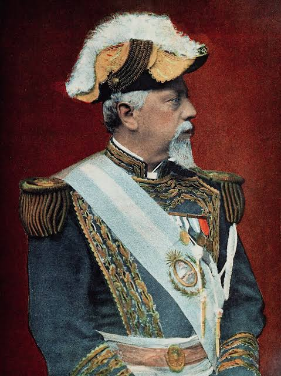

Una carrera política en ascenso
Julio Argentino Roca nació en Tucumán el 17 de julio de 1843. Estudió en el Colegio de Concepción del Uruguay y comenzó su carrera militar siendo joven. Con el paso del tiempo ocupó cargos de creciente importancia hasta convertirse en ministro de Guerra y luego presidente.
Su ascenso político se relacionó con las redes de poder provinciales y nacionales que se consolidaron durante la organización del Estado. Argentina.gob.ar señala que Roca construyó una importante base política en Córdoba y participó activamente en las disputas de la época.

Sus dos presidencias
Medidas y transformaciones
- Educación: la Ley 1.420 estableció la educación primaria común, gratuita, obligatoria y laica.
- Infraestructura: se desarrollaron ferrocarriles, puertos y edificios públicos.
- Moneda: se avanzó en la unificación del sistema monetario nacional.
- Defensa: se creó la Escuela Superior de Guerra y durante su segundo mandato se fortaleció la profesionalización militar.
- Administración: se organizaron y administraron territorios nacionales.
Personas y actores relacionados
Nicolás Avellaneda
Presidente entre 1874 y 1880. Roca fue su ministro de Guerra y Marina.
Eduardo Racedo
Militar que participó en las campañas militares vinculadas con la expansión estatal sobre territorios indígenas.
Pablo Riccheri
Ministro de Guerra durante el segundo gobierno de Roca, asociado a la modernización y profesionalización del Ejército.
Una mirada crítica
Hablar de “modernización” no significa que todos los sectores hayan vivido esos cambios de la misma manera. Las políticas estatales de fines del siglo XIX tuvieron efectos diferentes sobre las élites, trabajadores, inmigrantes y pueblos originarios. Por eso, una lectura escolar responsable debe incluir logros, conflictos y consecuencias.
← Volver a Inicio